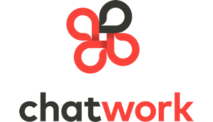

求人・広告
Job Offer & Advertising
株式会社ヌーラボ
世界で使われるコラボレーションサービスを開発したい方！
株式会社ヌーラボは「チームで働くすべての人に」をコンセプトに、仕事を楽しく、コラボレーションを促進するサービスを開発しています。プロジェクト管理の「Backlog」、図の作成と共有の「Cacoo」、チームディスカッションの「Typetalk」の開発、提供をおこなっています。
TypetalkとBacklogではScalaを採用していて、すでに多くの方の仕事を支えています。Scalaを利用している会社と合同で勉強会を開催したり、社内でもScalaや関数型プログラミングに関する勉強を実施しており、今後Scalaに力を入れていこうと考えています。また、実際にサービスで利用するために開発したScalaのライブラリをGitHubで OSS として公開も行っています。
本社は福岡ですが、国内には京都、東京にも開発拠点があります。すべての拠点で開発者を募集していますので、Scalaを使った開発に興味がある方やヌーラボのサービスに興味がある方、「仕事の中に楽しさを」のコンセプトに共感する方、ぜひご応募ください。詳しくは採用情報やヌーラボブログの技術カテゴリーを参照してください。
採用情報ページ
ChatWork株式会社
Scalaで大規模チャットツールを一緒に作りましょう！

当社では『ChatWork（チャットワーク）』というクラウド型ビジネスチャットツールを主力事業として展開しています。
チャットワークは、世界183カ国、63,000社以上の企業にご利用いただいています。 「チャットワークで世界の働き方を変える！」のミッションのもと、中小企業をはじめ大企業、教育機関、官公庁に採用され、各組織の生産性向上やコミュニケーション活性化に貢献しています。
現在は チャットワークの全システムをScalaに書き換えようと、Scalaのエキスパートでもある加藤潤一さんの下、日々Scalaでの開発を行っています。 現場ではScalaの知識はもちろん、DDD（Domain Driven Design）での設計手法や関数型言語の知識が求められており、それらに応じた社内勉強会も活発に開催されています。
当社は大阪オフィスの他に東京オフィスもあり、エンジニアの中には自宅からのリモート勤務をしている方もいます。 Scalaでの開発経験がないエンジニアでも随時募集中です。Scalaでの開発業務経験をしてみたい方、世界で通用する大規模なビジネスチャット開発をしたい方、DDDが実践されている現場に興味がある方、ご応募お待ちしております。
採用情報ページ株式会社グラッドキューブ
当社では「喜びをカタチにする」という理念を掲げ、Webプロモ−ション事業と同時にWebシステムの開発も行っております。昨年ローンチしましたWebサイト解析・改善ASPの「SiTest(サイテスト)」の開発、運用を100%自社開発で行っており、既に400社以上の企業様に導入していただいております。
SiTestはフロントエンドに力を入れたシステムになっており、システムのほとんどが関数型altJSであります「LiveScript」で書かれています。Scalaの実績はまだありませんが、年内に予定されている次のサービスではサーバーサイドにScalaの採用を予定しており、社内でもScalaでの開発気運が高まりつつあります。
エンジニアの人数が6名と、まだまだ成長過程にあるベンチャー企業ですが、勉強会への貢献を積極的に推奨しており、勉強会会場の貸し出しも行っております。大阪でScalaを使った開発がしたい！最新のWEB技術を駆使した開発がしたい！フロントエンドのスキルも磨きたい！とにかく面白いことがしたい！という方、サービスの立ち上げから携われるチャンスです。是非ご応募ください！
株式会社はてな
はてなは「『知る』『つながる』『表現する』で新しい体験を提供し、人の生活を豊かにする」をミッションに、「はてなブックマーク」「はてなブログ」などのソーシャルサービスを展開しています。最近はサーバー監視ツール「Mackerel」などビジネス向けの製品もリリースし、アクティブに開発中です。
京都と東京の二拠点体制に加え、自宅でリモート勤務をしているエンジニアもおり、GitHub Enterprise や Slack を利用しアジャイルなチーム開発を行っています。
元々は Perl をメインの開発言語としてきましたが、最近は新たに Scala および Go を採用しており、これからも注力していく予定です。イベントや社員のブログでも、Scala に関する取り組みを発信しています（ Mackerel におけるScala/Play、Slickについて）。
Scala を使って人の生活を豊かにしたいあなた、是非ご応募ください！ 勤務地は京都と東京の両方を選択できます。詳しくは採用ページや開発者ブログをご覧ください。

フリュー株式会社
募集職種
サーバサイドエンジニア
職務内容
自社のプリントシール機で撮影した画像をダウンロードし、加工・共有できるサービス「ピクトリンク」のサーバサイドのアプリケーション設計・開発・運用をお任せいたします。
応募資格
【必要条件】
Webアプリの開発経験が3年以上ある方
【優遇条件】
以下の技術に関する実務経験のある方を歓迎します
開発言語：Java、JavaScript、HTML5、Scala
主要DB：Oracle、MySQL
【求めるスキル】
◆チームで円滑に仕事を進めるためのコミュニケーション力
◇開発/運用フェーズ、インフラ/アプリケーションなどを区切らず、サービスの成功のためにあらゆる課題にチャレンジできる意欲のある方
◇社外コミュニティ活動や勉強会に積極的に参加する等、技術の進化に敏感にキャッチアップする意欲のある方
勤務地
京都事業所

株式会社サイバーエージェント
サイバーエージェント アドテクスタジオでは一緒に働ける仲間を募集中です。
アドネットワーク、リワード、RTB、DMPなど多岐にわたるインターネット広告プロダクト開発を行っており、インターネット広告最大級のトラフィックを受ける広告システム開発に携われるのも魅力です。
■アドテクスタジオの魅力
10Gbpsを超える広告トラフィック
数十PBクラスのデータ基盤
Aerospike,Matrix,MAPRなど最新ミドルウェア利用
少数精鋭のチームでスピード感ある開発
アドテクスタジオのエンジニアは現在約300名。横の繋がりでスキルアップしやすい
Scalaの関数型の特徴を活かすことにより、副作用の少ないシステムを作ることが出来るため、アドテクスタジオ内のプロダクトで採用事例が増えています。また、Scalaへの貢献・拡大に力を入れており、Scala Matsuriの協賛・運営サポートやSparkへのコントリビュート、勉強会の開催などを行ってます。
業務は既存システム改修、新機能開発、新規事業の立上げなど様々です。
事業を進めるにあたりスピードが求められるのはもちろん、高いスキルが求められます。是非ご応募ください。
エムオーテックス株式会社
あなた：「次のプロジェクトはScalaで挑戦してみたいのですが…」
上司 ：「そんな訳のわからない言語はダメです！」
というやり取りを経験したことのあるそこのあなた！
私たちと一緒に、ScalaでPlay2でDDDなプロダクトを一緒に作りませんか？
私たちは、日本でトップシェアを得ているプロダクトを携え、これから世界に打って出ます。
開発効率、品質アップのために選択した開発環境はScala、そしてPlay2 Framework。
ユーザーの本当の課題を解決し、プロダクトが進化し続けるためのの手法として選択したのはDDD。
あなたの実力を存分に活かす為の環境を用意しています。
是非、世界に打って出る製品を一緒に作りましょう！ご応募お待ちしております！